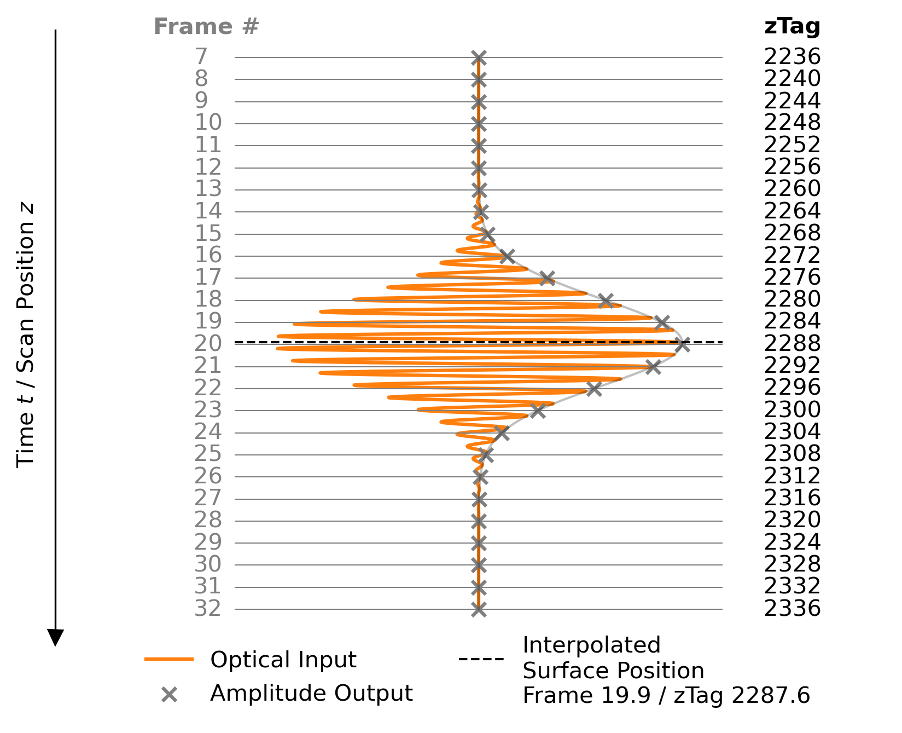
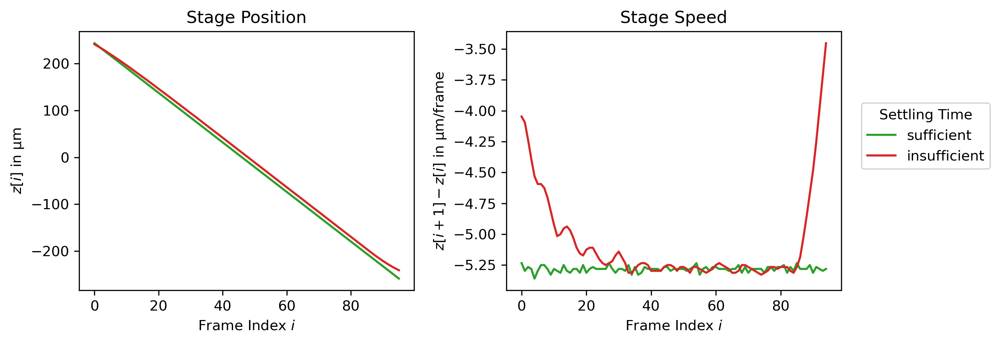

TN_19.4.0.1: Scan Motion Monitoring (zTag-reading)
Challenge: Monitoring Scan Motion Profile
For precise WLI measurements, it is essential that the measuring head moves at a well-controlled, constant speed with respect to the sample. Departures from this ideal case can occur due to sample movement (see TN_19.3.0.1: Reducing Vibration-Induced WLI Amplitude Loss) or irregular scan stage motion. Detecting the latter for monitoring and optimization purposes is the subject of this technical note.
heliInspect devices keeps track of the motor stage position at the centre of each camera frame, see Fig. 8. (In most operating modes, a surface and a reflectance image is extracted from the ensemble of these frames behind the scene.) The motor feedback, or more precisely the motor encoder values, can be retrieved as zTags from the same buffer as other measurements data.
{kind=link}

Fig. 8 Illustration of heliInspect zTag Output Alongside In-Pixel Signal Processing
In every scan with a heliInspect, a stack of frames is recorded. Each individual frame represents the instantaneous envelope (and phase shift) of a high-frequency input signal in a spatially resolved manner. The camera also extracts the central motor position, or zTag, in terms of (integer) motor encoder increments for each frame. In most cases, these data are processed directly on the camera to determine the interpolated peak position, which corresponds to the surface position in every pixel. Other possible outputs of such processed extraction modes are the value of the envelope or the phase shift at the signal peak.
Implementation
To retrieve zTags, the camera must be configured to write them to the buffer containing measurement data as part of the so-called chunk components. Here are the corresponding instructions in the form of pseudo code.
# enable chunk data
ChunkModeActive = True
ChunkSelector = "ZTagCount"
ChunkEnable = True
# enable zTag related chunk data
ChunkSelector = "ZTagValue"
ChunkEnable = True
Note
This piece of code must be executed in the camera’s configuration mode prior to the start of the data acquisition.
After the measurement, each frame’s zTag can be retrieved by means of a loop.
# accessing zTags included in chunk data (part of acquired buffer)
nofZTags = ChunkZTagCount
zTags = array of size nofZTags
# loop over all available zTag values (index from 0 to nofZTags-1)
ChunkZTagSelector = index
zTags[index] = ChunkZTagValue
Note
This piece of code must be executed in the camera’s acquisition after the buffer carrying data has been fetched.
Note
To properly terminate the loop, the number of zTags - or equivalently frames - is read directly from the buffer.
To convert the stage position of the \(i^{th}\) frame expressed as a zTag, \(zTag[i]\), to physical units, they must be multiplied by the encoder resolution, \(\Delta_{zTag}\).
The encoder resolution can be read from the camera using the feature
EncoderResolution.
# read encoder resolution in nm/tick
encoderRes = EncoderResolution
Interpretation
An example of one adequate and one inadequate outcome of the stage position monitoring are shown in Fig. 9.
{kind=link}

Fig. 9 Satisfactory and Unsatisfactory Motion Profiles Measured via zTags and Converted to Physical Units
In the former case, the scan parameters were selected to produce a linear, controlled stage
movement. In the latter case a high ScanSpeed and a small AccelerationRamp were set.
As a result, the scan speed is not yet stable during image acquisition, resulting in a
non-linear movement.
Document History
Version |
Date |
Changes |
Responsible |
|---|---|---|---|
19.4.0.0 |
07-04-2025 |
Initial version |
|
19.4.0.1 |
11-06-2025 |
Review |
bm |